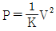
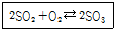
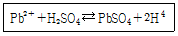

화학분석기능사 (2015-01-25 기출문제)
1과목: 일반화학
1. 다음 중 아염소산의 화학식은?
- HCIO
- HCIO2
- HCIO3
- HCIO4
(정답률: 88%)

2. 같은 주기에서 원자번호가 증가할 때 나타나는 전형원소의 일반적 특성에 대한 설명으로 틀린 것은?
- 이온화에너지는 증가하지만 전자친화도는 감소한다.
- 전기음성도와 전자친화도 모두 증가한다.
- 금속성과 원자의 크기가 모두 감소한다.
- 금속성은 감소하고 전자친화도는 증가한다.
(정답률: 70%)
3. 알칼리 금속에 대한 설명으로 틀린 것은?
- 공기 중에서 쉽게 산화되어 금속광택을 잃는다.
- 원자가전자가 1개이므로 +1가의 양이온이 되기 쉽다.
- 할로겐원소와 직접 반응하여 할로겐화합물을 만든다.
- 염소와 1:2 화합물을 형성한다.
(정답률: 85%)
4. 염화나트륨 용액을 전기분해할 때 일어나는 반응이 아닌 것은?
- 양극에서 Cl2 기체가 발생한다.
- 음극에서 O2 기체가 발생한다.
- 양극은 산화반응을 한다.
- 음극은 환원반응을 한다.
(정답률: 78%)
5. 어떤 NaOH수용액 1000mL 를 중화하는데 2.5N의 HCI 80mL가 소요되었다. 중화한 것을 끓여서 물을 완전히 증발시킨 다음 얻을 수 있는 고체의 양은 약 몇 g인가? (단, 원자량은 Na : 23, O : 16, Cl : 35.45, H : 1이다.)
- 1
- 2
- 4
- 12
(정답률: 43%)
6. 할로겐원소의 성질 중 원자번호가 증가할수록 작아지는 것은?
- 금속성
- 반지름
- 이온화에너지
- 녹는점
(정답률: 78%)
7. 다음 화합물 중 순수한 이온결합을 하고 있는 물질은?
- CO2
- NH3
- KCl
- NH4Cl
(정답률: 71%)
8. 헥사메틸렌디아민(H2N(CH2)6NH2)과 아디프산(HOOC(CH2)4COOH)이 반응하여 고분자가 생성되는 반응을 무엇이라 하는가?
- Addition
- Synthetic resin
- Reduction
- Condensation
(정답률: 73%)
9. 다음 중 원자 반지름이 가장 큰 원소는?
- Mg
- Na
- S
- Si
(정답률: 71%)
10. 황산 49g을 물에 녹여 용액 1L을 만들었다. 이 수용액의 몰 농도는 얼마인가? (단, 황산의 분자량은 98이다.)
- 0.5 M
- 1 M
- 1.5 M
- 2 M
(정답률: 67%)
11. 다음 중 산, 염기의 반응이 아닌 것은?
- NH3 + HCl → NH4+ + Cl-
- 2C2H5OH + 2Na → 2C2H5ONa + H2
- H+ + OH- → H2O
- NH3 + BF3 → NH3BF3
(정답률: 57%)
12. 다음 중 포화탄화수소 화합물은?
- 요오드 값이 큰 것
- 건성유
- 시클로헥산
- 생선기름
(정답률: 86%)
13. 일정한 온도에서 일정한 몰수를 가지는 기체의 부피는 압력에 반비례한다는 것(보일의 법칙)을 올바르게 표현한 식은? (단, P : 압력, V : 부피, k : 비례상수이다.)
- PV = k
- P = kV
- V = kP

(정답률: 81%)
14. 질량수가 23인 나트륨의 원자번호가 11이라면 양성자수는 얼마인가?
- 11
- 12
- 23
- 34
(정답률: 77%)
15. 공기는 많은 종류의 기체로 이루어져 있다. 이 중 가장 많이 포함되어 있는 기체는?
- 산소
- 네온
- 질소
- 이산화탄소
(정답률: 88%)
16. 다음 반응 중 이산화황이 산화제로 작용한 것은?
- SO2 + NaOH ⇄ NaHSO3
- SO2 + Cl2 + 2H2O ⇄ H2SO4 + 2HCl
- SO2 + H2O ⇄ H2SO3
- SO2 + 2H2S ⇄ 3S + 2H2O
(정답률: 58%)
17. 다음 중 헨리의 법칙에 적용이 잘되지 않는 것은?
- O2
- H2
- CO2
- NaCl
(정답률: 71%)
18. 일정한 온도에서 1atm의 이산화탄소 1L와 2atm의 질소 2L를 밀폐된 용기에 넣었더니 전체 압력이 2atm이 되었다. 이 용기의 부피는?
- 1.5L
- 2L
- 2.5L
- 3L
(정답률: 52%)
19. 수은 기압계에서 수은 기둥의 높이가 380mm이었다. 이것은 약 몇 atm인가?
- 0.5
- 0.6
- 0.7
- 0.8
(정답률: 70%)
20. 산화-환원반응에서 산화수에 대한 설명으로 틀린 것은?
- 한 원소로만 이루어진 화합물의 산화수는 0이다.
- 단원자 이온의 산화수는 전하량과 같다.
- 산소의 산화수는 항상 -2이다.
- 중성인 화합물에서 모든 원자와 이온들의 산화수의 합은 0이다.
(정답률: 81%)
2과목: 분석화학
21. 다음 중 산성의 세기가 가장 큰 것은?
- HF
- HCl
- HBr
- HI
(정답률: 56%)
22. 질산(HNO3)의 분자량은 얼마인가? (단, 원자량 H = 1, N = 14, O = 16이다.)
- 63
- 65
- 67
- 69
(정답률: 87%)
23. 산이나 알칼리에 반응하여 수소를 발생시키는 것은?
- Mg
- Si
- Al
- Fe
(정답률: 59%)
24. 다음 중 탄소와 탄소사이에 π결합이 없는 물질은?
- 벤젠
- 페놀
- 톨루엔
- 이소부탄
(정답률: 69%)
25. 다음 중 산성산화물은?
- P2O5
- Na2O
- MgO
- CaO
(정답률: 74%)
26. 다음 반응에서 반응계에 압력을 증가시켰을 때 평형이 이동하는 방향은?

- SO3가 많이 생성되는 방향
- SO3가 감소되는 방향
- SO2가 많이 생성되는 방향
- 이동이 없다.
(정답률: 74%)
27. 용액 1L 중에 녹아있는 용질의 g 당량 수로 나타낸 것을 그 물질의 무엇이라고 하는가?
- 물 농도
- 몰랄 농도
- 노르말 농도
- 포르말 농도
(정답률: 70%)
28. 다음 반응에서 생성되는 침전물의 색상은?

- 흰색
- 노란색
- 초록색
- 검정색
(정답률: 61%)
29. 고체를 액체에 녹일 때 일정 온도에서 일정량의 용매에 녹일 수 있는 용질의 최대량은?
- 몰 농도
- 용해도
- 백분율
- 천분율
(정답률: 89%)
30. 산의 전리상수 값이 다음과 같을 때 가장 강한 산은?
- 5.8×10-2
- 2.4×10-4
- 8.9×10-2
- 9.3×10-5
(정답률: 61%)
31. pH가 10인 NaOH 용액 1L 에는 Na+ 이온이 몇 개 포함되어 있는가? (단, 아보가드로수는 6×1023 이다.)
- 6×1016
- 6×1019
- 6×1021
- 6×1025
(정답률: 64%)
32. 수산화크롬, 수산화알루미늄은 산과 만나면 염기로 작용하고, 염기와 만나면 산으로 작용한다. 이런 화합물을 무엇이라 하는가?
- 이온성 화합물
- 양쪽성 화합물
- 혼합물
- 착화물
(정답률: 84%)
33. 칼륨이 불꽃 반응을 하면 어떤 색깔의 불꽃으로 나타나는가?
- 백색
- 빨간색
- 노란색
- 보라색
(정답률: 78%)
34. 이온곱과 용해도곱 상수(Ksp)의 관계 중 침전을 생성시킬 수 있는 것은?
- 이온곱 ＞ Ksp
- 이온곱 = Ksp
- 이온곱 ＜ Ksp
- 이온곱 = Ksp/해리상수
(정답률: 78%)
35. 요오드포름 반응으로 확인할 수 있는 물질은?
- 에틸알콜
- 메틸알콜
- 아밀알콜
- 옥틸알콜
(정답률: 73%)
36. 다음 실험기구 중 적정실험을 할 때 직접적으로 쓰이지 않는 것은?
- 분석천칭
- 뷰렛
- 데시케이터
- 메스플라스크
(정답률: 80%)
37. AgCl의 용해도가 0.0016g/L 일 때 AgCl의 용해도 곱은 약 얼마인가? (단, Ag의 원자량은 108, Cl의 원자량은 35.5이다.)
- 1.12×10-5
- 1.12×10-3
- 1.2×10-5
- 1.2×10-10
(정답률: 50%)
38. ‘용해도가 크지 않은 기체의 용해도는 그 기체의 압력에 비례한다.’와 관련이 깊은 것은?
- 헨리의 법칙
- 보일의 법칙
- 보일-샤를의 법칙
- 질량보존의 법칙
(정답률: 74%)
39. 황산(H2SO4)의 1당량은 얼마인가? (단, 황산의 분자량은 98g/mol이다.)
- 4.9g
- 49g
- 9.8g
- 98g
(정답률: 79%)
40. 다음 중 침전 적정법이 아닌 것은?
- 모르법
- 파얀스법
- 폴하르트법
- 킬레이트법
(정답률: 70%)
3과목: 기기분석
41. 시약의 취급방법에 대한 설명으로 틀린 것은?
- 나트륨과 칼륨의 알칼리금속은 물 속에 보관한다.
- 브롬산, 플루오르화수소산은 피부에 닿지 않게 한다.
- 알코올, 아세톤, 에테르 등은 가연성이므로 취급에 주의한다.
- 농축 및 가열 등의 조작 시 끓임쪽을 넣는다.
(정답률: 86%)
42. 가시-자외선 분광광도계의 기본적인 구성요소의 순서로서 가장 올바른 것은?
- 광원 - 단색화 장치 - 검출기 - 흡수용기 - 기록계
- 광원 - 단색화 장치 - 흡수용기 - 검출기 - 기록계
- 광원 - 흡수용기 - 검출기 - 단색화 장치 - 기록계
- 광원 - 흡수용기 - 단색화 장치 - 검출기 - 기록계
(정답률: 67%)
43. 전해로 석출되는 속도와 확산에 의해 보충되는 물질의 속도가 같아서 흐르는 전류를 무엇이라 하는가?
- 이동전류
- 한계전류
- 잔류전류
- 확산전류
(정답률: 54%)
44. pH 미터에 사용하는 포화 칼로멜 전극의 내부관에 채워져 있는 재료로 나열된 것은?
- Hg, HgCl2, 포화 KCl
- 포화 KOH 용액
- Hg2Cl2, KCl
- Hg, KCl
(정답률: 63%)
45. 분광광도계에서 빛의 파장을 선택하기 위한 단색화장치로 사용되는 것만으로 짝지어진 것은?
- 프리즘, 회절격자
- 프리즘, 반사거울
- 반사거울, 회절격자
- 볼록거울, 오목거울
(정답률: 75%)
46. 분광광도계에서 빛이 지나가는 순서로 맞는 것은?(오류 신고가 접수된 문제입니다. 반드시 정답과 해설을 확인하시기 바랍니다.)
- 입구슬릿 → 시료부 → 분산장치 → 출구슬릿 → 검출부
- 입구슬릿 → 분산장치 → 시료부 → 출구슬릿 → 검출부
- 입구슬릿 → 분산장치 → 출구슬릿 → 시료부 → 검출부
- 입구슬릿 → 출구슬릿 → 분산장치 → 시료부 → 검출부
(정답률: 59%)
47. 분석시료의 각 성분이 액체크로마토그래피내부에서 분리되는 이유는?
- 흡착
- 기화
- 건류
- 혼합
(정답률: 85%)
48. 원자흡광광도계에 사용할 표준용액을 조제하려고 한다. 이 때 정확히 100mL를 조제하고자 할 때 가장 적합한 실험기구는?
- 메스피펫
- 용량플라스크
- 비커
- 뷰렛
(정답률: 72%)
49. 종이크로마토그래피에서 우수한 분리도에 대한 이동도의 값은?
- 0.2~0.4
- 0.4~0.8
- 0.8~1.2
- 1.2~1.6
(정답률: 71%)
50. 0.01M NaOH의 pH는 얼마인가?
- 10
- 11
- 12
- 13
(정답률: 69%)
51. 황산구리(CuSO4) 수용액에 10A의 전류를 30분 동안 가하였을 때, (-)극에서 석출하는 구리의 양은 약 몇 g인가? (단, Cu 원자량은 64이다.)
- 0.01g
- 3.98g
- 5.97g
- 8.45g
(정답률: 47%)
52. 가스크로마토그래피의 기본 원리로 보기 어려운 것은?
- 이동상이 기체이다.
- 고정상은 휘발성 액체이다.
- 혼합물이 각 성분의 이동 속도의 차이 때문에 분리된다.
- 분리된 각 성분들은 검출기에서 검출된다.
(정답률: 73%)
53. 다음 중 전위차법에서 사용하는 장치로 옳은 것은?
- 광원
- 시료용기
- 파장선택기
- 기준전극
(정답률: 68%)
54. 유지의 추출에 사용되는 용제는 대부분 어떤 물질인가?
- 발화성 물질
- 용해성 물질
- 인화성 물질
- 폭발성 물질
(정답률: 64%)
55. 원자흡광광도법에서 빛의 흡수와 원자 농도와의 관계는?
- 비례
- 반비례
- 제곱근에 비례
- 제곱근에 반비례
(정답률: 67%)
56. 분극성의 미소전극과 비분극성의 대극과의 사이에 연속적으로 변화하는 전압을 가하여 전해에 의해 생긴 전류를 측정하여, 전압과 전류의 관계곡선(전류-전압 곡선)을 그려 이것을 해석하여 목적 성분을 분리하는 방법은?
- 전위차 분석
- 폴라로그래피
- 전해 중량분석
- 전기량 분석
(정답률: 64%)
57. 가스크로마토그래피에서 사용되는 운반기체로서 가장 부적당한 것은?
- He
- N2
- H2
- C2H2
(정답률: 70%)
58. 1850cm-1에서 나타나는 벤젠 흡수피크의 몰흡광계수의 값은 4950M-1ㆍcm-1이다. 0.⑤mm 용기에서 이 피크의 흡광도가 0.01이 되는 벤젠의 몰농도는?
- 4.04×10-2M
- 4.04×10-3M
- 4.04×10-4M
- 4.04×10-5M
(정답률: 52%)
59. 분광광도계에 사용 할 시료용기에 용액을 채울 때 어느 정도가 가장 적당한가?
- 1/2
- 1/3
- 2/3
- 1/4
(정답률: 81%)
60. 분광광도계에서 정성분석에 대한 정보를 주는 흡수 스펙트럼 파장은 어느 것인가?
- 최저 흡수파장
- 최대 흡수파장
- 중간 흡수파장
- 평균 흡수파장
(정답률: 74%)